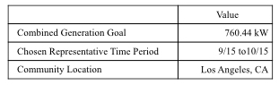
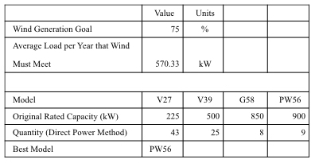
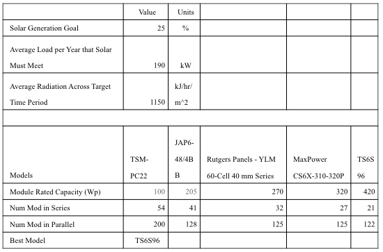
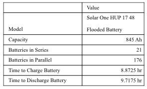
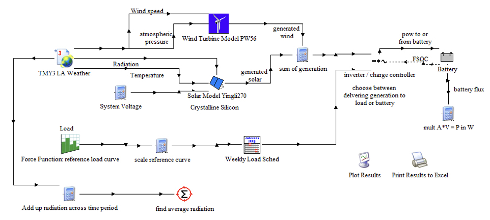
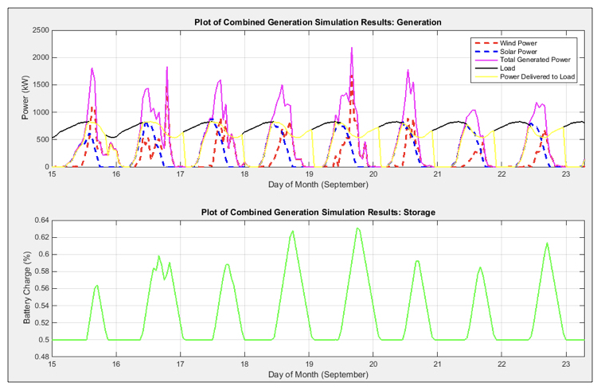
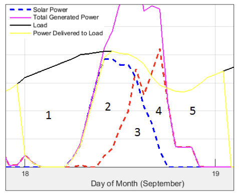

Sizing Methodology for Combined Renewable Energy Systems
Writer: Jaimie Swartz
Citation: Swartz, J. & Jafari, M. (2016). Sizing Methodology for Combined Renewable Energy Systems. Rutgers Research Review, 1(2).
My name is Jaimie Swartz and I am from Edison, NJ. I am a member of the Class of 2017 and am pursuing a major in Electrical and Computer Engineering. Upon entering college, I decided that my ultimate dream job was to “manage the powering of a major city with 100% renewables.” For the past several semesters, I have been part of a research team that is simulating precisely the energy community that I dreamed to build several years ago. I plan to continue research in graduate school on smart grids and optimal coordination of renewable energy sources. I work in the Laboratory for Energy Smart Systems, a research group led by Dr. Mohsen Jafari in the Department of Industrial and Systems Engineering.
With the dramatic growth of renewable energy sources in recent years including solar photovoltaics, wind, and energy storage, it has become extremely important to effectively integrate these sources into the grid. Our team’s project is centered on the following question: How can we power a community efficiently by using renewable energy to meet the demand? The answer is a net-zero energy community. We are building a cyber-physical energy testbed that achieves net-zero energy for a given community. This community is composed of multiple commercial and residential buildings, as well as an on-site generation system. One innovative feature of our testbed is the use of theoretical (cyber) models to simulate our community and further develop these models with real-time (physical) building data from the university. The second innovative feature is the combination and optimization of several renewable generation sources, allowing us to utilize synergy between the components.

Figure 1: The template of the testbed.
Our team is interdisciplinary, comprised of industrial, electrical, and computer engineers; this allows us to capitalize on our diverse knowledge by addressing all aspects of the project. My particular focus is on sizing and simulating the generation system (see blue blocks in Figure 1). For generation system sizing, how do we choose the type and quantity of generation sources that will best help the community achieve net-zero energy when combined together? The methodology can be simplified to an input-output analogy: the system inputs are the community’s varying load, location-dependent data, and commercially available generation types. Then I take a heuristic approach by assigning a few parameters to rules of thumb and collecting constraint equations, each of which are cross-referenced carefully. According to the physics behind these energy systems and referenced sizing guides, the quantity and configuration of each generation component are calculated and outputted. Furthermore, generation data from a simulation of this sized system are also outputted.

Table 1: Initial conditions for particular sizing scenario.

Table 2: Summary of wind sizing results.

Table 3: Summary of solar PV sizing results.

Table 4: Summary of battery sizing results.
First, initial conditions for the community are set (see Table 1). For location, interactive maps and data from NREL, SWERA, and Open EI are used to determine that Los Angeles would be a feasible location for the wind design case study. Next, the percentage of total energy generation that should be met by wind and solar was set at 75 percent and 25 percent, respectively, according to the solar vs. wind guideline for California in (Becker et al., 2014). Next, the time period to design over was chosen as the mild September 15th to October 15th according to net-zero energy guidelines in (Torcellini et al., 2006). This suggests it is best to size the generation system according to an average-case time period.
The sizing process compared several commercially available wind turbine and solar panel models across a broad range of capacities to determine the best model. Then a quantity and configuration are recommended for each model, taking into account efficiency losses, wind speed, and radiation potential, among many other factors. Sizing calculations were based on several sizing guides (How to Design Solar PV System - Guide for Sizing Your Solar Photovoltaic System; Wade, 2008). For wind and solar, each type-configuration recommendation was simulated in TRNSYS to determine the combination that best meets the generation goal (Solar Energy Laboratory & Klein, 1979).
Once the best wind and solar model were chosen, the sizing results were incorporated into model that was simulated in TRNSYS, producing hourly results of each generation source’s behavior.

Figure 2: TRNSYS Simulation Block Diagram of combined renewable energy system, including wind, solar, and energy storage.

Figure 3: Simulation results across first eight days of chosen sizing time period, September 15th to October 15th. A comparison of power generation and the load, as well as corresponding battery charging and discharging, is shown.

Figure 4: A magnified view of the power generation and consumption simulation results. 1) During early morning hours, generation is zero and load is not met; 2) During mid-day, solar generation reaches a peak, wind begins to increase, and excess generation is stored in battery; 3) During early afternoon, both generation sources are about equal; 4) During late afternoon, solar begins to decline, wind reaches its peak, and battery switches from charging to discharging to continue meeting the load; 5) During the evening, instantaneous generation declines to zero and discharge of battery is the only source that continues to deliver power to the load until around midnight when the battery reaches its discharge limit.
The final output of my work includes a technical suggestion for the best type and configuration of several generation components, as well as forecasted behavior if a combined generation system were implemented. Therefore, our testbed designs and simulates the best available generation system for a given community, which is crucial for it to achieve net-zero energy.
It is observed that total generation from wind and solar can be close to zero in certain parts of the night, but often spikes midday. In response to this variability, parameters will be adjusted, especially in the battery component, to attain a more smoothed out generation curve. Cost and land constraints have also not been accounted for. The next phase of this work will include a thorough cost-benefit analysis to help choose between turbine models. This cost-benefit analysis will be conducted when varying other factors such as the distribution of energy generation between solar and PV and varying the representative time period to worst or best case scenarios. This sensitivity analysis will make the testbed more dynamic and accommodating of a wide range of communities.
Therefore, our testbed designs and simulates the best available generation system for a given community, which is crucial for it to achieve net-zero energy. The current capabilities of my work include a technical suggestion for the best type and configuration of several generation components, as well as forecasted behavior if a combined generation system were implemented. The development of tools and software that can design an optimal system for any community, regardless of size or complexity, is extremely important to the modernization of the power grid. With continued research and development of this energy testbed, this work would enable consumers, utilities, and regulators, to understand and control the behavior of more intelligent, efficient, and sustainable energy communities.
References
- Becker, S., Frew, B. A., Andresen, G. B., Zeyer, T., Schramm, S., Greiner, M., & Jacobson, M. Z. (2014). Features of a fully renewable US electricity system: Optimized mixes of wind and solar PV and transmission grid extensions. Energy, 72, 443-458.
- Torcellini, P., Pless, S., Deru, M., & Crawley, D. (2006). Zero energy buildings: a critical look at the definition. National Renewable Energy Laboratory and Department of Energy, US.
- University of Wisconsin--Madison. Solar Energy Laboratory, & Klein, S. A. (1979). TRNSYS, a transient system simulation program. Solar Energy Laborataory, University of Wisconsin—Madison.
- Wade, H. (2008, March 31). PV System Sizing. Lecture presented at Solar PV Design Implementation O & M, Marshall Islands.
- How to Design Solar PV System - Guide for Sizing Your Solar Photovoltaic System. (2013). Leonics. Retrieved from http://www.leonics.com/support/article2_12j/articles2_12j_en.php.